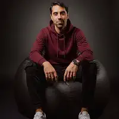

Bruno
Becker.
Escritor brasileiro · Romance LGBTQIA+ · Criador audiovisual
Histórias que permanecem.
Encontros, escolhas, memórias e tudo aquilo que permanece depois da chuva.

Entre histórias e emoções.
Bruno Becker é autor brasileiro radicado em Portugal. Em seus romances, explora relações humanas, afetos LGBTQIA+, escolhas difíceis e as marcas que o tempo deixa — ou não consegue apagar.
Seu romance de estreia, Depois da Chuva, acompanha Caio e Miguel, dois homens separados pelo passado que se reencontram onze anos depois em Porto Sereno. Bruno escreve para leitores de romances emocionais, com personagens adultos e imperfeitos e histórias sobre memória, reencontros e recomeços.
Corações da Costa
Romances LGBTQIA+ ambientados em Porto Sereno. Acompanhe Caio e Miguel em histórias sobre amor, memória e recomeços.
Comece por Depois da Chuva, Livro 1, e conheça a continuação, Um Oceano de Segredos, Livro 2.
Depois da Chuva
Caio e Miguel se reencontram onze anos depois, em Porto Sereno. Entre silêncios e segredos, precisam enfrentar o passado e descobrir se ainda existe espaço para um novo começo.
Um Oceano de Segredos
O segundo livro de Corações da Costa. Caio e Miguel descobrirão que permanecer também exige enfrentar os segredos que o passado trouxe de volta.
Do livro à imagem.
Além da literatura, Bruno Becker desenvolve projetos de narrativa audiovisual, explorando novas maneiras de contar histórias e dar vida aos seus personagens.
Porto Sereno: Depois da Chuva
Projeto de narrativa audiovisual relacionado ao universo literário de Depois da Chuva, explorando seus personagens e histórias em linguagem visual.
Novidades sobre o projeto serão divulgadas nos canais oficiais do autor.
Bruno Becker para imprensa e parcerias.
Bruno Becker é escritor brasileiro residente em Portugal e criador de narrativas audiovisuais. Sua produção explora encontros, memória, relações humanas e recomeços.
Informações para referência
Área de atuação: literatura de ficção e criação audiovisual.
Obra em destaque: Depois da Chuva, do universo literário Corações da Costa.
Projeto audiovisual: Porto Sereno: Depois da Chuva.
Para informações atualizadas sobre lançamentos e projetos, consulte os canais oficiais abaixo. Materiais de imprensa e solicitações profissionais podem ser encaminhados pelo perfil oficial do autor.
Acessar press kit Contato profissional via InstagramDescubra mais histórias.
Conheça os livros e acompanhe a trajetória literária de Bruno Becker.
Perfil de autor na Amazon Instagram @brunoabecker